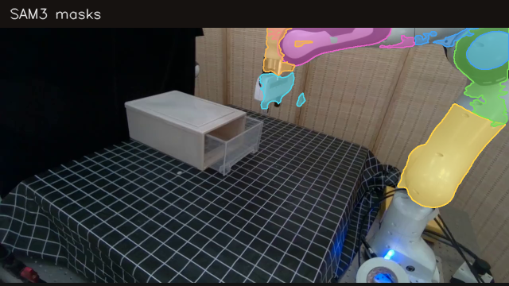
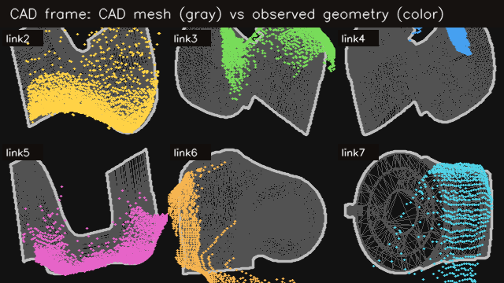
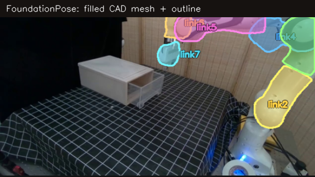
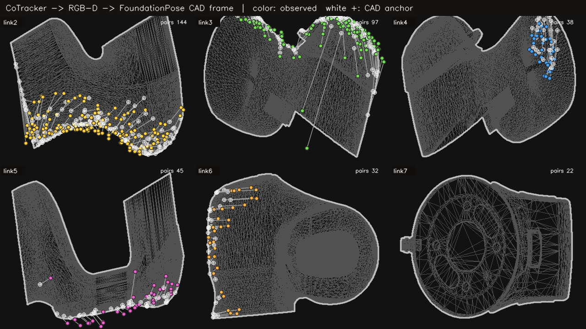

No validated deformation signal.
All segment AUROCs are close to chance. All matched Pearson correlations are near zero.
30 labeled videos. Weak AUROC. Near-zero correlation.
The score does not separate deformed from non-deformed robot segments.
All segment AUROCs are close to chance. All matched Pearson correlations are near zero.
Four steps.



Tcamera←link = [R | t]
R = rotation · t = translation

AUROC near 0.5 and Pearson r near 0 show no useful relationship.
| Human label | CAD links | No deformation | Deformation | AUROC | Permutation p |
|---|---|---|---|---|---|
| Upper arm | 2 + 3 | 0.1631 | 0.1635 | 0.522 | 0.968 |
| Forearm | 4 + 5 | 0.1252 | 0.1299 | 0.580 | 0.724 |
| Gripper | 7 | 0.2212 | 0.2171 | 0.452 | 0.898 |
Four replays show where the score fails and where it works.
The deformation escapes measurement because the tracked points fail.
The deformation escapes measurement because the tracked points fail.
The anatomical score moves in the wrong direction. The score is not meaningful here.
The score rises in the expected direction.
Two main reasons.
Tracking fails most often during real deformation. The affected link becomes unscorable, so the deformation escapes measurement.
MISSED DEFORMATIONSAM masks, MegaSAM depth, FoundationPose alignment, CoTracker motion, and CAD binding all add error. The final score mixes these errors with deformation.
NOISY SCOREFix tracking before tuning the score.